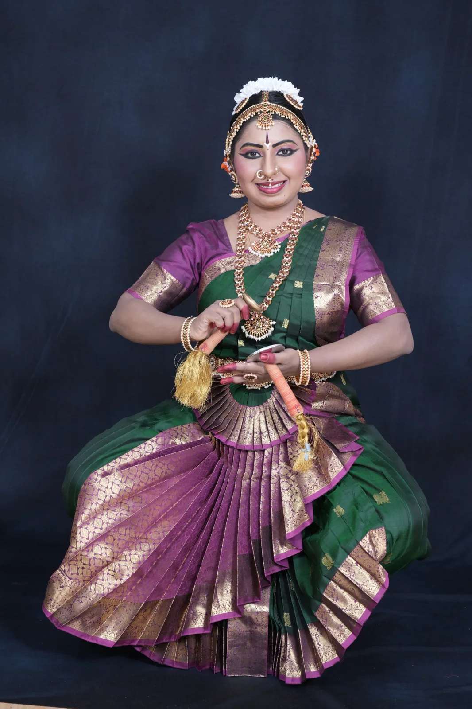
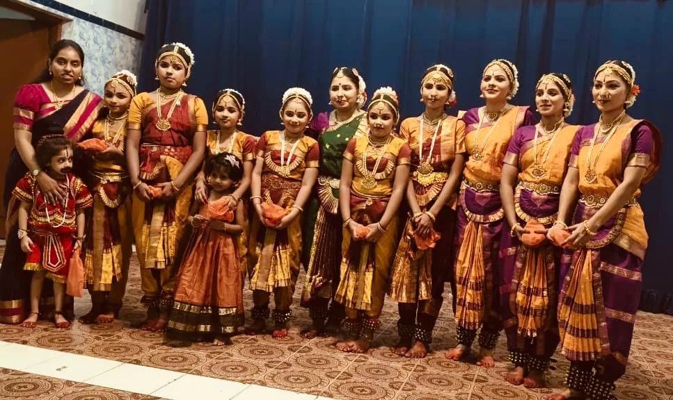
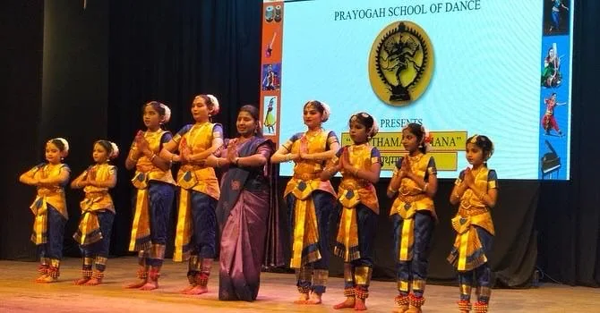

Strong Foundations
Structured learning through adavus, tala, hastas, shlokas and theory.

Where tradition finds expression.
A space to learn, experience and celebrate the timeless art of Bharatanatyam — guided by Guru Smt. Srujana C.
At Prayogah, Bharatanatyam is more than a dance form. It is a journey of discipline, devotion, rhythm, expression and cultural understanding.
Structured learning through adavus, tala, hastas, shlokas and theory.
Encouraging confidence through abhinaya, practice and stage experience.
Supporting students in both practical training and examination preparation.
Founder of Prayogah School of Dance, Smt. Srujana C has pursued Bharatanatyam for over two decades and is a disciple of Guru Smt. Sreeranjini Umesh.
She completed KSEEB Vidwath Poorva and Vidwath Antima and presented her Rangapravesha on 5 December 2024 at ADA Rangamandira, Bengaluru. Her journey includes performances in India and abroad, alongside her commitment to guiding the next generation of dancers.
Her teaching philosophy places quality, disciplined practice, cultural understanding and joyful learning at the heart of every class.
Explore performances on YouTube ↗Thoughtfully structured Bharatanatyam training for learners at different stages.
Introduction to posture, rhythm, basic adavus, namaskara and the joy of movement.
Developing stronger foundations in technique, hand gestures, rhythm and repertoire.
Advanced technique, expressive work, repertoire, theory and stage preparation.
Batch placement and availability are confirmed by the Guru. Enquire about admissions →



Students of Prayogah actively participate in state and central dance examinations, nurturing both practical excellence and theoretical knowledge.
Our students have had opportunities to perform at cherished cultural and devotional venues, including Chamundi Betta, Ragigudda, Vasavi Temple and Kalagrama, among others.
We celebrate collective achievements while respecting every student's privacy.
Explore class notes, examination preparation, the CCRT study handbook and a growing Hasta learning library. Open the original PDF notes directly within the website, with illustrations, diagrams and syllabus pages preserved.
STATE EXAMINATION · KANNADABharatanatyam State Examination SyllabusJunior · Senior · Vidwath Poorva · Vidwath AntimaAdya · Madhya · Purna · Nritya Sree 1 · Nritya Sree 2
Prarambhik · Praveshika Prathama
Learn the names and one-word memory cues for 28 Asamyutha (single-hand) and 24 Samyutha (double-hand) Hastas. Watch the demonstrations for visual guidance.
Watch the hand gestures demonstrated in sequence, then use the cards below to revise the names.
One-word meanings are learning cues, not complete Hasta Viniyogas.A glimpse into performances, practice, celebrations and the artistic journey of Prayogah.
Prayogah has developed a dedicated parent–teacher portal to make everyday class administration more convenient and transparent.
The portal is designed to support attendance, fee information and payment history, helping parents and the Guru stay aligned while reducing repeated manual follow-ups.
Student information is kept out of this public website. Access to the separate parent portal requires its own secure sign-in.
Ask about parent portal accessWe'd love to hear from aspiring dancers and their families.
Shiny Play Home
20/48, Near HMR School, Srirama Layout, Jnana Jyothi Nagar, Mallathahalli, Bengaluru, Karnataka 560056
Guru Smt. Srujana C
+91 9535409637
prayogahschoolofdance@gmail.com
Correspondence address
No. 48/44, Thrupthi, Sri Rama Layout, 1st Cross, Jananajyothi Nagar, Bengaluru 560056